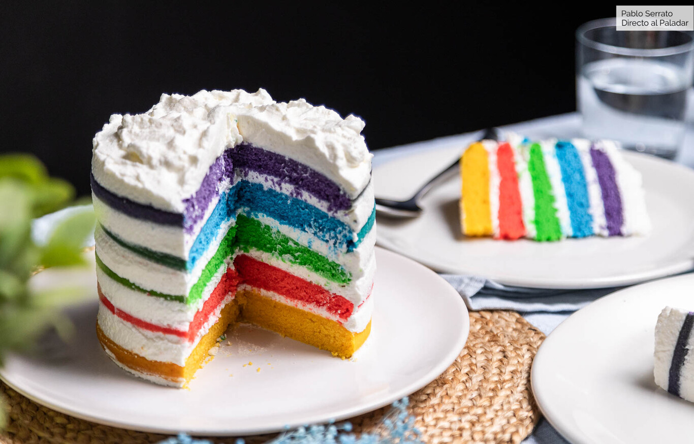

Bienvenidos
¿Quiénes somos?
Rinconcito inició en Nicaragua en Octubre de 1950, abriendo su primer restaurante en San Rafael de Escazú. Dicho restaurante vendía nuestro delicioso pollo asado a la leña, servido con frijolitos, cebollitas en vinagre y tortillas palmeadas. A través de los años, las ventas de los restaurantes crecieron y sus ganancias fueron invertidas principalmente en la mejora propia del local, tanto en ambiente como en decoración.
El segundo restaurante en abrir fue Calle Real, en San pedro, en 1988. Luego llegaron los demás: Guadalupe (1990), Desaparados (1991), San José Centro (1994), Heredia (1997), Alajuela (1999), Curridabat (2000), Santa Ana (2001), Sabana (2993), Terramall en Noviembre del 2003, Real Cariari (2008), Paseo de las flores (2008), Antares (2010), Paseo Metrópoli y Plaza Lincoln (2012), Multiplaza del Este (enero 2013). Con el fin de lograr un desarrollo corporativo más acelerado y organizado, la creación de algunos de los nuevos restaurantes contó con la participación de nuevos socios.
Comida de entrada
Arepas de chicharrón
La arepa de chicharrón es de forma inequívoca, la arepa más gustosa. Es tan rica, que casi todos la prefieren sola (aunque luego hablaremos de los rellenos). Estas arepas tienen una masa muy suave por dentro, y son crujientes por fuera. El gusto y la textura de la masa, sin duda, la aportan los trocitos de chicharrón con que se amasan estas arepas.
Ingredientes
Mariscos al ajillo
 Esta es mi receta sencilla y rápida para preparar mariscos al ajillo. Esta receta lleva una combinación de camarones, calamar, y conchitas – y los mariscos adicionales de su preferencia. Se cocinan en una salsa con mantequilla, ajo, cebolla blanca, vino blanco, y crema de leche. Al final se agrega perejil picado para darle un toque de frescura.
Esta es mi receta sencilla y rápida para preparar mariscos al ajillo. Esta receta lleva una combinación de camarones, calamar, y conchitas – y los mariscos adicionales de su preferencia. Se cocinan en una salsa con mantequilla, ajo, cebolla blanca, vino blanco, y crema de leche. Al final se agrega perejil picado para darle un toque de frescura.
Ingredientes
Preparación
Platos fuertes
Pollo asado con mandarina y uvas pasas
Hoy vamos a ver cómo preparar pollo asado con mandarina y uvas pasas. Ésta es una receta un poco diferente a las que estamos acostumbrados, lo cual es ideal para salir de la rutina en la cocina. Como todas las recetas de pollo asado, ésta también es muy fácil. Pero a su vez está llena de color y de sabor, convirtiéndolo en un plato perfecto para sorprender en la próximas fechas navideñas.
El pollo combina genial con el dulzor que aportan la mandarina y las pasas. En esta ocasión he decidido aromatizarlo también con tomillo fresco, granos de mostaza y garam masala. Una combinación de sabores irresistibles.
Ingrediente
Cordero al horno
 El cordero asado es uno de los platos más preparados y consumidos en Navidad, por lo que hoy quiero enseñarte cómo hacer cordero al horno en casa y que quede muy tierno.
Preparar cordero al horno es muy sencillo, pues solo debemos asegurarnos de conseguir una buena pieza de carne y cocinarla a fuego lento. De esta manera conseguiremos que nos quede un cordero asado muy jugoso y tierno que se deshace en la boca.
El cordero asado es uno de los platos más preparados y consumidos en Navidad, por lo que hoy quiero enseñarte cómo hacer cordero al horno en casa y que quede muy tierno.
Preparar cordero al horno es muy sencillo, pues solo debemos asegurarnos de conseguir una buena pieza de carne y cocinarla a fuego lento. De esta manera conseguiremos que nos quede un cordero asado muy jugoso y tierno que se deshace en la boca.
Podrás condimentar el cordero al horno con lo que más te guste, en esta ocasión yo lo he sazonado con sal, pimienta recién molida, pimentón dulce, ajo, unas ramas de romero fresco y un buen chorro de aceite de oliva virgen extra. Un adobo de lo más sencillo pero que da como resultado un sabroso plato de cordero. En cuanto a la guarnición, también podemos encontrar multitud de opciones y yo he apostado por el clásico lecho de patatas. Solo debemos pelarlas y colocarlas laminadas en el fondo de la bandeja del horno. Al colocar la carne encima, se van regando con los jugos de la carne y quedan muy sabrosas.
Ingredientes
Preparación
Bebidas
Tequila – México
Cuando alguien te habla de México ¿en que bebida piensas? El tequila es un destilado originario del municipio de Tequila en el estado de Jalisco, México. Ha dado fama mundial a este país y hoy en día es uno de los grandes embajadores de esta cultura.
Fruit Shakes – Sudeste Asiático
 Por tan sólo 40 céntimos te puedes comprar un granizado de fruta fresca en los puestos callejeros de muchos países de Asia. Todo tipo de frutas te esperan, plátano, mango, piña… por su manera de prepararlo y lo bien que sienta cuando hace tanto calor, se ha vuelto la bebida más típica del Sudeste Asiático.
Por tan sólo 40 céntimos te puedes comprar un granizado de fruta fresca en los puestos callejeros de muchos países de Asia. Todo tipo de frutas te esperan, plátano, mango, piña… por su manera de prepararlo y lo bien que sienta cuando hace tanto calor, se ha vuelto la bebida más típica del Sudeste Asiático.
Mate – Sudamérica
Países como Argentina, Uruguay, Paraguay, Chile…son grandes consumidores de mate, una infusión en torno a la cual hay una fuerte tradición cultural. La forma típica de consumirlo es caliente en un recipiente hecho de madera mediante un sorbete denominado bombilla, hecho de metal o caña, para poder succionar.
Caipirinha- Brasíl
La Caipirinha es una bebida alcohólica refrescante muy popular en todo el mundo pero originaria de Brasil. Esta hecha con Cachaça, lima o limon, hielo picado y azúcar. Es importante beberlo con moderación ya que, al estar tan bueno, no te das cuanta de la cantidad de alcohol que lleva y después vienen sus efectos secundarios.
Postres
Brownie
Brownie o galleta, brownie o galleta,... Si la indecisión se ha apoderado de ti y no sabes por cual de estos dos dulces decantarte, vengo con buenas noticias: no hace falta decidir. Con esta receta de brownie de aceite de oliva con base de galleta tendrás ambos en un mismo bocado. Un dos en uno en toda la regla que te va a hacer levitar, sobre todo si eres amante del chocolate. La combinación de base crujiente y masa jugosa es soberbia y adictiva. Si lo dejas reposar de un día para otro, este brownie de aceite de oliva con base de galleta gana en consistencia y sabor.
Rainbow cake
Mira que tenemos un recetario amplio, extenso y variado, pero nos faltaba la tarta arcoíris o rainbow cake. Hoy ponemos remedio a la situación preparándola para vosotros. Para que veáis que, aunque laboriosa, es fácil de hacer y está al alcance de todos. Este clásico de la repostería norteamericana es más que un layer cake en el que se alternan capas de bizcocho de distintos colores con nata montada azucarada. Requiere de un poco de paciencia, pues el proceso es algo largo, pero el resultado bien merece el tiempo extra invertido.
Receta rápida de galletas finas
Convertida la avena en el alimento saludable por excelencia de los últimos años, se nos olvida un poco que también es un ingrediente habitual de recetas, digamos, no tan sanas. Si las famosas -falsas- galletas de avena y plátano te parecen corchopán gomoso -es lo que hay-, esta receta de hoy viene a hacer las paces con quienes buscan una galleta crujiente, sabrosa, dulce y, sí, calórica. Más nutritiva que una galleta industrial corriente, pues el porcentaje de copos de avena es muy superior al de harina refinada y no usamos grasas hidrogenadas, pero que nadie piense que es un dulce sano. Es un capricho de consumo ocasional y moderado; ya que cada uno las gestione como crea conveniente.